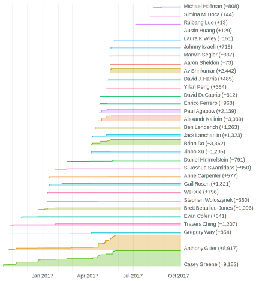

Daniel S. Himmelstein 0000-0002-3012-7446 · dhimmel · dhimmel Department of Systems Pharmacology and Translational Therapeutics, University of Pennsylvania · Funded by GBMF4552
Casey S. Greene 0000-0001-8713-9213 · cgreene · GreeneScientist Department of Systems Pharmacology and Translational Therapeutics, University of Pennsylvania · Funded by GBMF4552
Anthony Gitter 0000-0002-5324-9833 · agitter · anthonygitter Department of Biostatistics and Medical Informatics, University of Wisconsin-Madison and Morgridge Institute for Research · Funded by NIH U54AI117924
Abstract
Main text
Introduction
Open research – which includes sharing code, data, and manuscripts – benefits the researchers who engage in open practices [1], their scientific peers, and the public. TODO: more references needed Here we describe the benefits of writing review articles openly, where the planning, organizing, writing, and editing occur collaboratively in a public forum where participants are free to join as they wish. Reviews presenting the state of the art in a scientific field are often prepared by a single research group or a small team of colleagues. In contrast, broadly opening the writing process to anyone engaged in the topic can help maximize the review’s value by facilitating the representation of diverse opinions and the broad coverage of relevant research. Review authors can engage with the authors of original research to clarify their methods and results and present them accurately, as exemplified here. TODO: need archival issue link In addition, discussing manuscripts in the open provides one form of pre- and post-publication peer review TODO: define this or provide a reference?, incentivizing the reviews with potential manuscript authorship. However, inviting wide authorship brings many technical and social challenges such as how to fairly distribute credit, coordinate the scientific content, and collaboratively manage extensive reference lists.
We present solutions to these challenges based on our recent experience leading a collaborative review “Opportunities And Obstacles For Deep Learning In Biology And Medicine” [2]. Our review attracted 27 authors from 20 different institutions who were not determined in advance. We wrote entirely in the open without restrictions on who was welcome to contribute. Although we requested that some authors participate for their specific expertise, most discovered the manuscript organically through conferences or social media and independently decided to contribute. To coordinate this effort, we developed a manuscript writing process using the Markdown language, the GitHub software development platform, and our new Manubot tool for automating manuscript generation.
Manubot
We developed Manubot, a system for writing scholarly manuscripts via GitHub. With Manubot, manuscripts are written as plain-text markdown files, which is well suited for version control using git. The markdown standard itself provides limited yet crucial formatting syntax, including the ability to embed images and format text via bold, italics, hyperlinks, headers, inline code, codeblocks, blockquotes, and numbered or bulleted lists. In addition, Manubot relies on extensions from Pandoc markdown to enable citations, tables, captions, and equations specified using the popular TeX math syntax.
Manubot includes an additional layer of citation processing, currently unique to the system. All citations point to a standard identifier, for which Manubot automatically retrieves bibliographic metadata. Currently, citations to DOIs (Digital Object Identifiers), PubMed identifiers, arXiv identifiers, and URLs (web addresses) are supported. Metadata is retrieved using DOI Content Negotiation, NCBI’s Citation Exporter, the arXiv API, or Greycite[3]. Metadata is exported to CSL JSON Items, an open standard that’s widely supported by reference managers [4,5]. In cases where automatic retrieval of metadata fails or produces incorrect references – which is most common for URL citations – users can manually provide the correct CSL JSON.
The Manubot formats bibliographies according to a Citation Style Language (CSL) specification. As a result, users can choose from thousands of existing CSL styles or use Manubot’s default style. Styles define how references are constructed from bibliographic metadata, controlling layout details such as the max number of authors to list per reference. Thousands of journals have predefined styles. As a result, adopting the specific bibliographic format required by a journal usually just requires specifying the style’s source URL in the Manubot configuration.
Manubot uses Pandoc to convert manuscripts from markdown to HTML, PDF, and optionally DOCX outputs. Pandoc supports conversion between additional formats — such as LaTeX, AsciiDoc, or EPUB — offering Manubot users broad interoperability. In a future release, Pandoc will support export to Journal Article Tag Suite (JATS). JATS is a standard XML format for scholarly articles that is used by publishers, archives, and text miners [6–8]. For now however, the primary Manubot output is HTML intended to be viewed in a web browser.
Manubot performs continuous publication: every update to a manuscript’s source is automatically reflected in the online outputs. The approach uses continuous integration (CI) [9,10], specifically Travis CI at the moment, to monitor for changes. When changes occur, the CI service generates an updated manuscript. If this process is error free, the CI service timestamps the manuscript and uploads the output files to the GitHub repository. Since the HTML manuscript is hosted using GitHub Pages, the CI service automatically deploys the new manuscript version when it pushes the updated outputs to GitHub.
For this article, the source GitHub repository is https://github.com/greenelab/meta-review. When this repository changes, Travis CI rebuilds the manuscript. If successful, the output is deployed back to GitHub (to dedicated output and gh-pages branches). As a result, https://greenelab.github.io/meta-review stays up to date with the latest HTML manuscript.
Manubot uses OpenTimestamps to timestamp the HTML and PDF outputs on the Bitcoin blockchain before deploying to GitHub. This procedure allows one to retrospectively prove that a manuscript version existed prior to its blockchain-verifiable timestamp [11–14]. The implications for scientific writing are twofold. First, scientific precedence can now be indisputably established. Second, timestamps can protect against attempts to rewrite a manuscript’s history. Since timestamps cannot be backdated, alternative histories would have to be created in advance, which is generally infeasible. Therefore, timestamping can help ensure accurate manuscript histories, potentially alleviating certain authorship disputes.
We designed Manubot to power the next generation of scholarly manuscript. Manubot transforms publication, making it permissionless, reproducible, free of charge, and largely open source. Manubot does rely on gratis services from two proprietary platforms: GitHub and Travis CI. Fortunately, lock-in to these services is minimal, and several substitutes already exist. One direction Manubot is working towards is end-to-end document reproducibility, where every figure or piece of data in a manuscript can be traced back to its origin [15]. Already, Manubot is well suited for preserving provenance. For example, figures can be specified using versioned URLs that refer to the code that created them. In addition, manuscripts can be templated, so that numerical values or tables get inserted directly from the repository that created them. An example repository demonstrates Manubot’s features and serves as a template for users to write their own manuscript with Manubot.
Contribution workflow
There are many existing collaborative writing platforms ranging from rich text editors, which support Microsoft Word documents or similar formats, to LaTeX-based systems for technical writing [16] such as Overleaf and Authorea. These platforms ideally offer version control, multiple permission levels, or other functionality to support multi-author document editing. Although they work well for editing, they lack sufficient features for managing a collaborative manuscript and attributing precise credit, which are important for open writing.
We adopted standard software development strategies in order to enable any contributor to edit any part of the manuscript but enforce discussion and review of all proposed changes. The GitHub platform provided support for organizing and editing the manuscript. We used GitHub issues for organization, opening a new issue for each paper under consideration. Within the issue, contributors summarized the research, discussed it (sometimes with the original authors), and assessed its relevance to the review. Issues also served as an open to-do list and a forum for debating the main message, themes, and topics of the review.
GitHub and the underlying git version control system [17,18] also structured the writing process. The official version of the manuscript is forked by individual contributors. A contributor then adds and revises files, grouping these changes into commits. When the changes are ready to be reviewed, the series of commits are submitted as a pull request through GitHub, which notifies other authors of the pending changes. GitHub’s review interface allows anyone to comment on the changes, globally or at specific lines, asking questions or requesting modifications as depicted in [19]. Conversations during review can reference other pull requests, issues, or authors, linking the relevant people and content. Reviewing batches of revisions that focus on a single theme is more efficient than independently discussing isolated comments and edits, and it helps maintain consistent content and tone across different authors and reviewers. Once all requested modifications are made, the manuscript maintainers, a subset of authors with elevated GitHub permissions, formally approve the pull request and merge the changes into the official version. TODO: need a figure with a flowchart showing this process The entire process can be orchestrated through GitHub with a web browser if a contributor does not want to use a git client on their own computer.
We found that this workflow was an effective compromise between fully unrestricted editing and a more heavily-structured approach that limits the authors or the sections they can edit. In addition, authors are associated with their commits, which makes it easy for contributors to receive credit for their work and helps prevent ghostwriting [20]. Figure 1 and the GitHub contributors page summarize all edits and commits from each author, providing aggregated information that is not available on other collaborative writing platforms. Because our writing process, like others backed by the open git version control system (including Overleaf and Authorea), tracks the complete commit history, it also enables detailed retrospective contribution analysis. TODO: confirm Overleaf and Authorea provide this type of git integration versus something more coarse
Figure 1: Deep Review contributions by author over time. The total words added to the Deep Review by each author is plotted over time (final values in parentheses). These statistics were extracted from git commit diffs of the manuscript’s markdown source. This figure reveals the composition of written contributions to the manuscript at every point in its history.
Authorship
To determine authorship we followed the International Committee of Medical Journal Editors (ICMJE) guidelines and used GitHub to track contributions. ICMJE recommends authors substantially contribute to, draft, approve, and agree to be accountable for the manuscript. We acknowledged other contributors who did not meet all four criteria, including contributors who provided text but did not review and approve the complete manuscript. Although these criteria provided a straightforward, equitable way to determine who would be an author, they did not produce a traditionally ordered author list. In biomedical journals, the convention is that the first and last authors made the most substantial contributions to the manuscript. This convention can be difficult to reconcile in a collaborative effort. Using git, we could quantify the number of commits each author made or the number of sentences an author wrote or edited, but these metrics discount intellectual contributions such as discussing primary literature and reviewing pull requests. However, there is no objective system to compare and weight the different types of contributions and produce an ordered author list.
To address this issue, we generalized the concept of “co-first” authorship, in which two or more authors are denoted as making equal contributions to a paper. We defined four types of contributions [2], from major to minor, and reviewed the GitHub discussions and commits to assign authors to these categories. A randomized algorithm then arbitrarily ordered authors within each contribution category, and we combined the category-specific author lists to produce a traditional ordering. The randomization procedure was shared with the authors in advance (pre-registered) and run in a deterministic manner. Given the same author contributions, it always produced the same ordered author list. We annotated the author list to indicate that author order was partly randomized and emphasize that the order did not indicate one author contributed more than another from the same category. TODO: In Discussion, present alternative author ordering strategies and literature on contribution in collaborative projects
Discussion
Many others have embraced open science principles and piloted open approaches toward drug discovery [21,22], data management [23–25], and manuscript review [26]. TODO: need help deciding what related topics to include here and which references to use, these are arbitrary examplesTODO: more ideas in doi:10.7287/peerj.preprints.2711v2 Several of these open science efforts are GitHub-based like our collaborative writing process. The ReScience [27], the Journal of Open Source Software [28], and some other Open Journals rely on GitHub for peer review and hosting. GitHub is also increasingly used for resource curation [29], and collaborative scholarly reviews combine literature curation with discussion and interpretation. TODO: describe Manubot related work here?[30] and https://github.com/ewanmellor/gh-publisher
There are potential limitations of our GitHub-based approach. Because our review manuscript pertained to a computational topic, most of the authors had computational backgrounds, including previous experience with version control workflows and GitHub. In other disciplines, collaborative writing via GitHub and Manubot could present a steeper barrier to entry and deter participants. In addition, git carefully tracks all revisions to the manuscript text but not the surrounding conversations that take place through GitHub issues and pull requests. These discussions must be archived to ensure that important decisions about the manuscript are preserved and authors receive credit for intellectual contributions that are not directly reflected in the manuscript’s text. GitHub supports programmatic access to issues, pull requests, and reviews so tracking these conversations is feasible in the future.
In our open review paper, we established contributor guidelines that discussed norms in the areas of of text contribution, peer review, and authorship, which we identified in advance as potential areas of disagreement. Our contributor guidelines required verifiable participation: either directly attributable changes to the text or participation in the discussion on GitHub. We maintained our guidelines, even when a case arose where two authors had written text together but only one had directly attributable changes and participation. These guidelines did not discuss broader community norms that may have improved inclusiveness. It is also important to consider how the move to an open contribution model affects under-represented minority members of the scientific community [31]. Recent work has identified clear social norms and processes as helpful to maintaining a collaborative culture [32]. Conferences and open source projects have used codes of conduct to establish these norms [33,34]. We would encourage the maintainers of similar projects to consider broader codes of conduct for project participants that establish on social as well as academic norms.
Open writing presents new opportunities for scholarly communication. TODO: reference "paper of the future"? arXiv:1601.02927 doi:10.22541/au.149693987.70506124 doi:10.22541/au.148769949.92783646 http://blogs.nature.com/naturejobs/2017/06/01/techblog-c-titus-brown-predicting-the-paper-of-the-future Though it is still valuable to have versioned drafts of a review manuscript with digital identifiers, journal publication may not be the terminal endpoint for collaborative manuscripts. After releasing the first version of our collaborative review [2], six new authors have contributed text (Figure 1) and existing authors continue to discuss new literature, creating a living document. TODO: update new author count before submitting The Manubot system can also facilitate open research [35] in addition to review articles. TODO: get permission and add https://slochower.github.io/nonequilibrium-barrier/ https://zietzm.github.io/Vagelos2017/
Our process represents an early step toward open massively collaborative reviews, and there are certainly aspects that can be improved. We invite the scientific community to adapt and build upon our experience and open software.
Acknowledgements
TODO: deep review authors for support in testing this processTODO: manubot-rootstock contributors
References
1. How open science helps researchers succeed
Erin C McKiernan, Philip E Bourne, C Titus Brown, Stuart Buck, Amye Kenall, Jennifer Lin, Damon McDougall, Brian A Nosek, Karthik Ram, Courtney K Soderberg, … Tal Yarkoni eLife (2016-07-07) https://doi.org/10.7554/elife.16800
2. Opportunities And Obstacles For Deep Learning In Biology And Medicine
Travers Ching, Daniel S. Himmelstein, Brett K. Beaulieu-Jones, Alexandr A. Kalinin, Brian T. Do, Gregory P. Way, Enrico Ferrero, Paul-Michael Agapow, Wei Xie, Gail L. Rosen, … Casey S. Greene Cold Spring Harbor Laboratory (2017-05-28) https://doi.org/10.1101/142760
3. Twenty-Five Shades of Greycite: Semantics for referencing and preservation
Phillip Lord, Lindsay Marshall arXiv (2013-04-26) https://arxiv.org/abs/1304.7151v1
7. Journal Article Tag Suite 1.0: National Information Standards Organization standard of journal extensible markup language
Sun Huh Science Editing (2014-08-18) https://doi.org/10.6087/kcse.2014.1.99
10. Reproducibility of computational workflows is automated using continuous analysis
Brett K Beaulieu-Jones, Casey S Greene Nature Biotechnology (2017-03-13) https://doi.org/10.1038/nbt.3780
11. Decentralized Trusted Timestamping using the Crypto Currency Bitcoin
Bela Gipp, Norman Meuschke, André Gernandt arXiv (2015-02-13) https://arxiv.org/abs/1502.04015v1
17. A Quick Introduction to Version Control with Git and GitHub
John D. Blischak, Emily R. Davenport, Greg Wilson PLOS Computational Biology (2016-01-19) https://doi.org/10.1371/journal.pcbi.1004668
18. Ten Simple Rules for Taking Advantage of Git and GitHub
Yasset Perez-Riverol, Laurent Gatto, Rui Wang, Timo Sachsenberg, Julian Uszkoreit, Felipe da Veiga Leprevost, Christian Fufezan, Tobias Ternent, Stephen J. Eglen, Daniel S. Katz, … Juan Antonio Vizcaíno PLOS Computational Biology (2016-07-14) https://doi.org/10.1371/journal.pcbi.1004947
20. What Should Be Done To Tackle Ghostwriting in the Medical Literature?
Peter C Gøtzsche, Jerome P Kassirer, Karen L Woolley, Elizabeth Wager, Adam Jacobs, Art Gertel, Cindy Hamilton PLoS Medicine (2009-02-03) https://doi.org/10.1371/journal.pmed.1000023
21. Systematic integration of biomedical knowledge prioritizes drugs for repurposing
Daniel Scott Himmelstein, Antoine Lizee, Christine Hessler, Leo Brueggeman, Sabrina L Chen, Dexter Hadley, Ari Green, Pouya Khankhanian, Sergio E Baranzini eLife (2017-09-22) https://doi.org/10.7554/elife.26726
22. An open source pharma roadmap
Manica Balasegaram, Peter Kolb, John McKew, Jaykumar Menon, Piero Olliaro, Tomasz Sablinski, Zakir Thomas, Matthew H. Todd, Els Torreele, John Wilbanks PLOS Medicine (2017-04-18) https://doi.org/10.1371/journal.pmed.1002276
24. The FAIR Guiding Principles for scientific data management and stewardship
Mark D. Wilkinson, Michel Dumontier, IJsbrand Jan Aalbersberg, Gabrielle Appleton, Myles Axton, Arie Baak, Niklas Blomberg, Jan-Willem Boiten, Luiz Bonino da Silva Santos, Philip E. Bourne, … Barend Mons Scientific Data (2016-03-15) https://doi.org/10.1038/sdata.2016.18
25. First, design for data sharing
John Wilbanks, Stephen H Friend Nature Biotechnology (2016-03-03) https://doi.org/10.1038/nbt.3516
26. A multi-disciplinary perspective on emergent and future innovations in peer review
Jonathan P. Tennant, Jonathan M. Dugan, Daniel Graziotin, Damien C. Jacques, François Waldner, Daniel Mietchen, Yehia Elkhatib, Lauren B. Collister, Christina K. Pikas, Tom Crick, … Julien Colomb F1000Research (2017-07-20) https://doi.org/10.12688/f1000research.12037.1
27. Sustainable computational science: the ReScience initiative
Nicolas P. Rougier, Konrad Hinsen, Frédéric Alexandre, Thomas Arildsen, Lorena Barba, Fabien C. Y. Benureau, C. Titus Brown, Pierre de Buyl, Ozan Caglayan, Andrew P. Davison, … Tiziano Zito arXiv (2017-07-14) https://arxiv.org/abs/1707.04393v1
28. Journal of Open Source Software (JOSS): design and first-year review
Arfon M Smith, Kyle E Niemeyer, Daniel S Katz, Lorena A Barba, George Githinji, Melissa Gymrek, Kathryn D Huff, Christopher R Madan, Abigail Cabunoc Mayes, Kevin M Moerman, … Jacob T Vanderplas arXiv (2017-07-07) https://arxiv.org/abs/1707.02264v1
29. The appropriation of GitHub for curation
Yu Wu, Na Wang, Jessica Kropczynski, John M. Carroll PeerJ Computer Science (2017-10-09) https://doi.org/10.7717/peerj-cs.134
30. Formatting Open Science: agilely creating multiple document formats for academic manuscripts with Pandoc Scholar
Albert Krewinkel, Robert Winkler PeerJ Computer Science (2017-05-08) https://doi.org/10.7717/peerj-cs.112
32. Innovating Collaborative Content Creation: The Role of Altruism and Wiki Technology
Christian Wagner, Pattarawan Prasarnphanich 2007 40th Annual Hawaii International Conference on System Sciences (HICSS’07) (2007) https://doi.org/10.1109/hicss.2007.277
35. Sci-Hub provides access to nearly all scholarly literature
Daniel S Himmelstein, Ariel R Romero, Stephen R McLaughlin, Bastian Greshake Tzovaras, Casey S Greene PeerJ Preprints (2017-07-20) https://doi.org/10.7287/peerj.preprints.3100v1